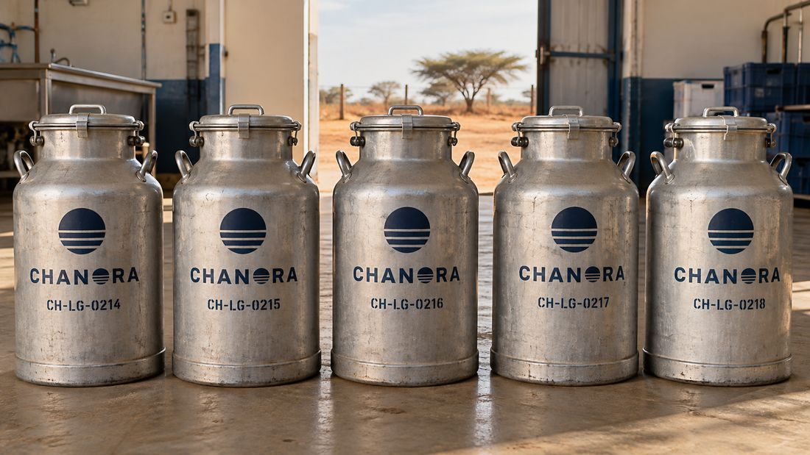
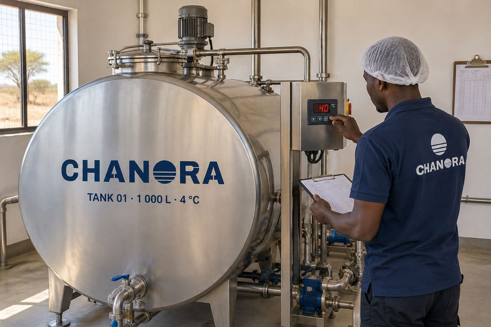
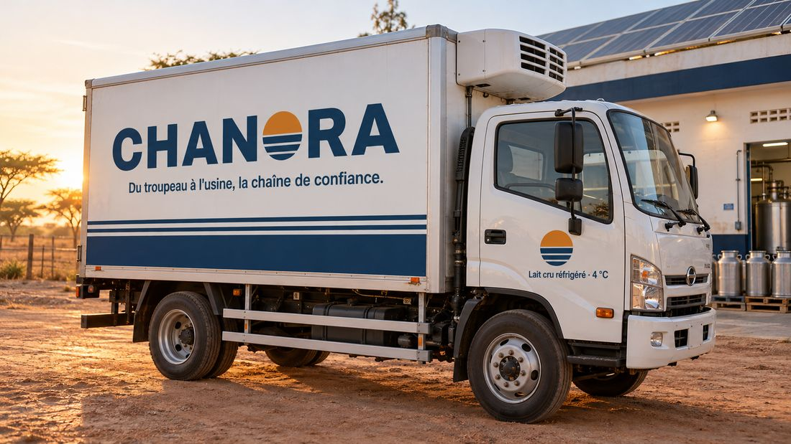
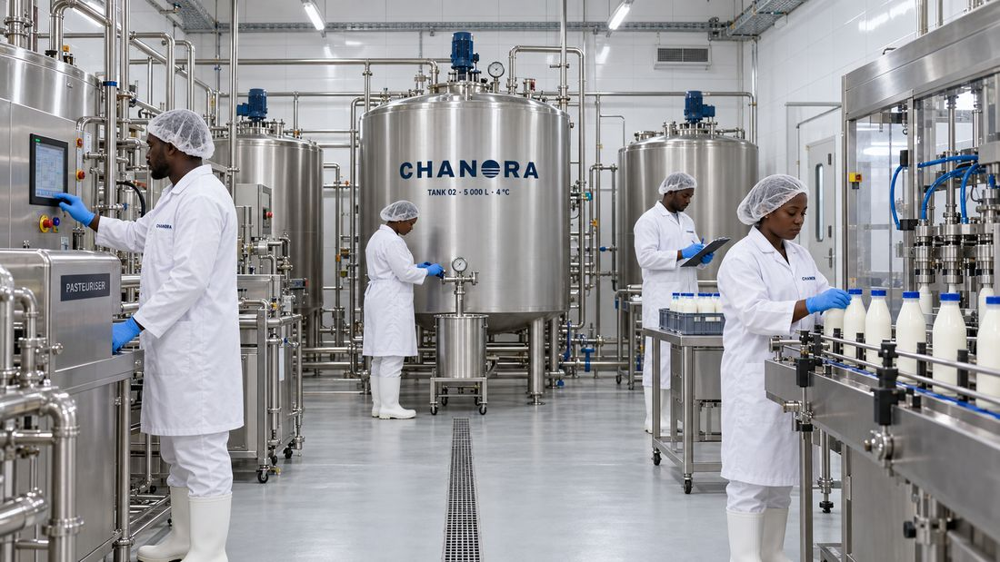
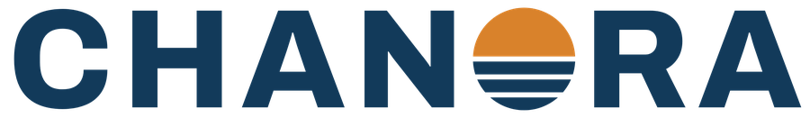
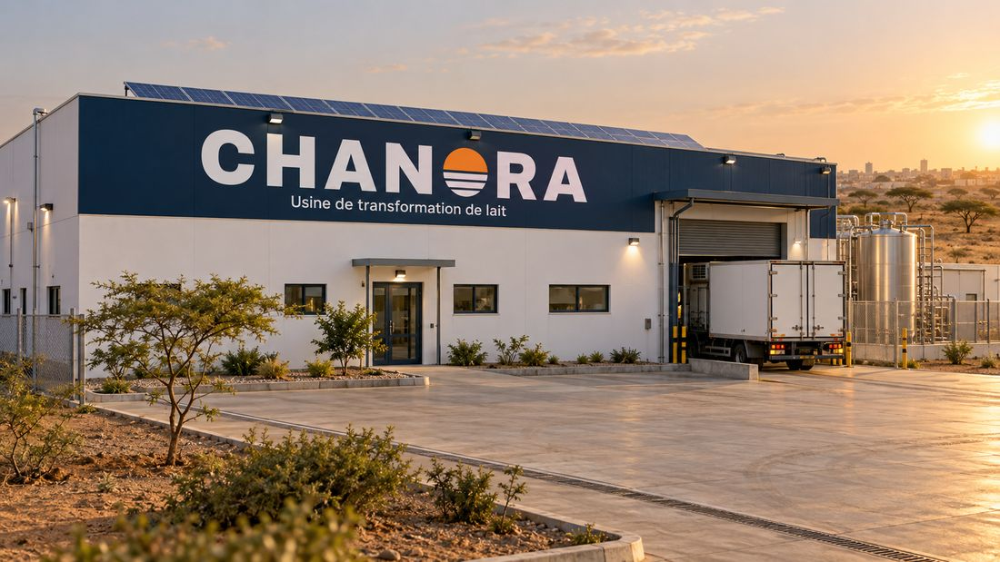
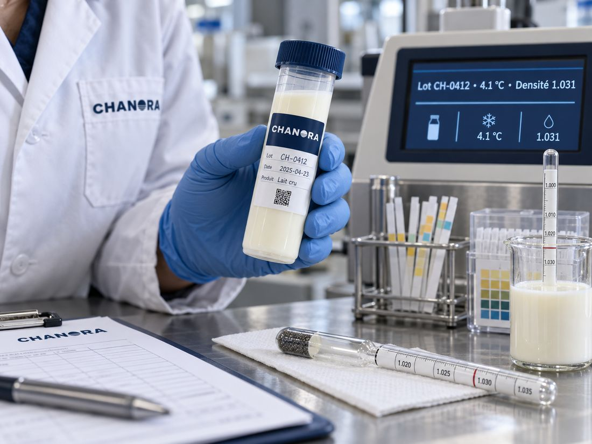
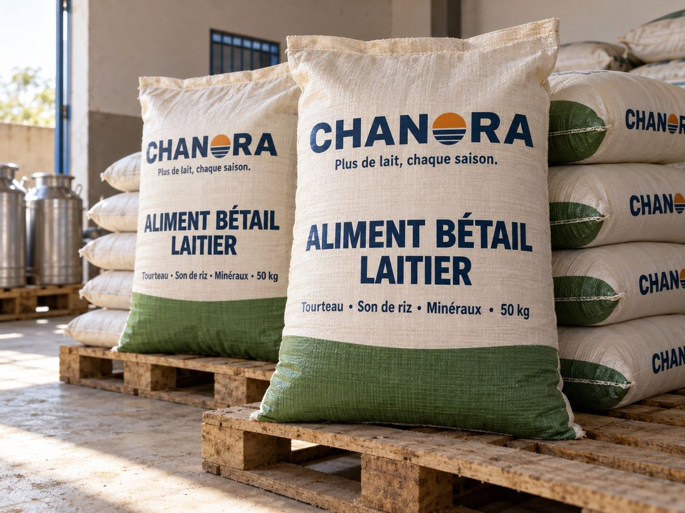

La force de la source.
Nous construisons l'approvisionnement en lait du Sénégal à partir de la source : collecte, froid, transformation, et des éleveurs payés chaque semaine.
Strength from the source. We are building Senegal's milk supply from the source: collection, cold chain, processing, and herders paid every week.
Le Sénégal a du lait. Il lui manque la chaîne.
Senegal has the milk. It lacks the chain.
La plupart du lait local est consommé à la maison ou vendu sans froid. Les transformateurs comblent le manque avec de la poudre importée. Ce qui manque au milieu, c'est le froid, la logistique, l'aliment de saison sèche et un acheteur qui paie à l'heure.
Most local milk is drunk at home or sold without refrigeration. Processors fill the gap with imported powder. What is missing in the middle is cold, logistics, dry-season feed and a buyer who pays on time.
litres de lait produits localement ne sont jamais transformés industriellement.
litres of locally produced milk are never processed industrially.
de lait encore importés chaque année, surtout en poudre.
of milk still imported every year, mostly as powder.
produits par an, pour un besoin d'environ 1 milliard de litres.
produced a year, against a need of about 1 billion litres.
La journée d'un litre de lait Chanora.
The day of a litre of Chanora milk.
Voici comment chaque centre fonctionnera, de la traite au paiement. Les images sont des concepts : le premier centre ouvrira avec cette levée.
This is how each centre will run, from milking to payment. The images are concepts: the first centre opens with this round.
Le lait part de l'éleveur.
Milk starts with the herder.
Les éleveurs livrent leur lait au centre ou à nos collecteurs, dans des bidons numérotés. Chaque bidon est tracé jusqu'à son propriétaire.
Herders bring their milk to the centre or hand it to our collectors, in numbered cans. Every can is traced to its owner.
CH-LG-0214
Testé, pesé, refroidi.
Tested, weighed, chilled.
Chaque livraison est analysée, pesée et enregistrée au nom de l'éleveur, puis refroidie à 4 °C dans un tank solaire.
Every delivery is tested, weighed and logged against the herder's name, then chilled to 4 °C in a solar-powered tank.
TANK 01 · 4.0 °C
La chaîne du froid ne casse pas.
The cold chain holds.
Un camion isotherme relie les centres à l'usine chaque jour. Le lait voyage froid, avec son numéro de lot et ses résultats d'analyse.
An insulated truck links the centres to the plant every day. Milk travels cold, with its lot number and test results.

Transformé dans les 48 heures.
Processed within 48 hours.
À l'usine, le lait est analysé à réception, pasteurisé, puis transformé en lait frais, lait caillé, yaourt, lait sans lactose et diwu nior.
At the plant, milk is tested on arrival, pasteurised, then made into fresh milk, lait caillé, yoghurt, lactose-free milk and diwu nior.
LOT CH-0412 · 1.031
L'éleveur est payé, chaque semaine.
The herder is paid, every week.
Le paiement arrive par mobile money, aliment bétail à crédit déduit. L'aliment augmente la production en saison sèche ; le remboursement passe par le lait.
Payment arrives by mobile money, with feed bought on credit deducted. Feed lifts dry-season yields; repayment comes out of the milk.
Votre paiement de la semaine a été envoyé. Jërëjëf !
Your payment for the week has been sent. Jërëjëf!
L'opérateur à la source.
The operator at the source.
Chanora possède la collecte, le froid et la transformation. Ses produits atteignent les consommateurs par des marques partenaires dans lesquelles elle investit, et par les entreprises agroalimentaires.
Chanora owns collection, cold chain and processing. Its products reach consumers through partner brands it invests in, and through food businesses.
Éleveurs
Herders
Livrent le lait deux fois par jour. Payés chaque semaine, ils achètent l'aliment à crédit.
Deliver milk twice a day. Paid weekly; buy feed on credit.

- Centres de collecte et de refroidissement solaires
- Solar collection and chilling centres
- Usine de transformation
- Processing plant
- Aliment bétail à crédit
- Feed on credit
- Qualité et traçabilité, du troupeau au lot
- Quality and traceability, herd to lot
Marques partenaires
Partner brands
Marques de consommation dans lesquelles Chanora investit.
Consumer brands Chanora invests in.
Entreprises agroalimentaires
Food businesses
Transformateurs, hôtels, boulangeries.
Processors, hotels, bakeries.
La boucle aliment. Plus d'aliment en saison sèche, plus de lait par vache, des centres pleins et un revenu plus stable pour les éleveurs.
The feed loop. More dry-season feed means more milk per cow, full centres and steadier income for herders.
Un pilote, puis un réseau.
A pilot, then a network.
Pilote
Pilot
- Deux centres de collecte solaires
- Une laiterie pilote près de Dakar
- Aliment à crédit pour les premiers éleveurs
- Two solar collection centres
- A pilot dairy near Dakar
- Feed on credit for the first herders
Montée en charge
Scale-up
- Nouveaux centres dans les zones d'élevage
- Capacité de l'usine augmentée
- Camion isotherme propre
- New centres in herding zones
- More plant capacity
- Our own insulated truck
Réseau
Network
- Un réseau de centres à travers les bassins laitiers
- Nos propres blocs d'aliment
- De nouvelles origines, le même modèle
- A network of centres across dairy regions
- Our own feed blocks
- New origins, same model



Images de conceptConcept images
Demandez le dossier investisseur.
Request the investor deck.
Le dossier, le plan d'affaires et les détails de la levée sont partagés sur demande. Partenaires, futurs clients et coopératives d'éleveurs : écrivez-nous aussi.
The deck, business plan and round details are shared on request. Partners, future clients and herder cooperatives: get in touch too.
- Investisseurs · dossier, plan et rencontre
- Investors · deck, plan and a meeting
- Partenaires de développement · impact et co-financement
- Development partners · impact and co-financing
- Futurs clients · approvisionnement et lettres d'intention
- Future clients · supply and letters of intent
Merci, votre demande est envoyée. Nous vous répondons par e-mail.
Thank you, your request has been sent. We will reply by email.